방재기사 (2020-08-22 기출문제)
1과목: 재난관리
1. 재난 및 안전관리 기본법령상 특별재난지역에 관한 설명이 옳지 않은것?
- 특별재난지역의 선포를 건의받은 대통령은 해당지역을 특별재난지역으로 선포할수있다.
- 대통령이 특별재난지역을 선포하는경에 중앙대책본부장은 특별재난 지역의 구체적인범위를 정하여 공고하여야한다.
- 사회재난과 관련하여 특별재난지역으로 선포한 지역에 대해서는 「재해구호법」에 따른 의연금품을 지원할수 있다.
- 중앙대책본부장은 지원을 위한 피해금액과 복구비용의 산정, 국고지원 내용등을 관계 중앙행정기관의 장과 협의 및 중앙대책본부회의 심의를 거쳐 확정한다.
(정답률: 알수없음)

2. 자연재해대책법령상 비상대처계획을 수립하여야하는 내진설계 대상 시설물에 해당하지 않는것은?
- 「공항시설법」에 따른 공항시설중 여객터미널등 지진으로인한 재해가 우려되는 시설
- 「도시가스사업법」에 따른 가스사용시설 중 지진으로 인한 재해가 우려되는 시설
- 「항만법」에따른 항만시설 중 방파제등 지진으로 인한 재해가 우려되는 시설
- 「도시철도법」에 따른 도시철도중 철도모노레일 등 지진으로 인한 재해가 우려되는시설
(정답률: 알수없음)
3. 재난 및 안전관리기본법령상 ′사회재난′에 해당하는 것은?
- 태풍
- 낙뢰
- 소행성·유성체 등 자연우주물체의 추락·충돌
- 「미세먼지 저감 및 관리에 관한 특별법」에따른 미세먼지로인한 피해
(정답률: 알수없음)
4. 재난 및 안전관리기본법령상 재난관리책임기관에 해당하지 않는 것?
- 국립검역소
- 한국방송공사
- 시 · 도의 교육청
- 한국관광공사
(정답률: 알수없음)
5. 댐·저수지 붕괴등에 의한 하류위험지역의 위험도 평가시 인구에 대한 설명으로 틀린것은?
- 위험지역의 인구는 붕괴시 범람으로 인한 인명피해 잠재성의 정량화된 척도로 사용된다.
- 위험지역의 인구는 붕괴시 범람으로 인한 하류 위험지역으로부터 피난해야 될 사람의 수를 말한다.
- 위험지역의 인구는 상시 거주지뿐만 아니라 작업장과 임시거주지 인구까지 포한한다.
- 인구위험도는 PAR(Person At Risk)로 표시되기도 하는데 댐의 상류지역에 거주하는 사람의 수로 정의 할 수 있다.
(정답률: 알수없음)
6. 대규모 복합재난 대응훈련 기본지침상 도상훈련에 관한 설명으로 틀린것?
- 대표적인 도상훈련 참여자는 복합재난 대응훈련준비단의 구성원들로 주관기관 훈련부서,유관기관 훈련실무자, 고위직 공무원등이다.
- 보통 도상훈련은 개념의 이해를 돕고, 장단점을 식별하며, 태도의 변화를 이끌어내기 위한 목적으로 실행한다.
- 훈련주관 기관장이 소속기관 등의 직원에게 핵심적인 주요과제를 사전에 부여하여 실시한다.
- 도상훈련방법은 기본과정과 전문과정이 있다.
(정답률: 알수없음)
7. 자연재해대책법령상 시·군 자연재해저감 종합계획의 수립주기는?
- 2년
- 4년
- 8년
- 10년
(정답률: 알수없음)
8. 지반의 액상화(Liquefaction)현상에 가장큰 영향을 주는 재난으로 옳은 것은?
- 홍수
- 대설
- 지진
- 화산활동
(정답률: 알수없음)
9. 재해구호법령상 재해구호계획에 포함되어야할 사항으로 명시되지 않은 것은?
- 임시주거시설의 제공에 관한 사항
- 재해구호기금의 운영·관리에 관한 사항
- 재해구호에 대한 교육 및 훈련에 관한사항
- 심리회복 지원에 관한사항
(정답률: 알수없음)
10. 자연재해대책법령상 지구단위별 종합복구계획 수립대상지역에 포함되지않는 것은?
- 도로·하천등의 시설물에 복합적으로 피해가 발생하여 시설물별 복구보다는 일괄복구가 필요한지역
- 산사태로 인하여 하천 유로변경등이 발생한 지역으로서 근원적 복구가 필요한 지역
- 「국토의 계획 및 이용에 관한 법률」에 따른 빗물저장시설등 환경기초 시설의 일괄 복구가 필요한지역
- 복구사업을 위하여 국가 차원의 신속하고 전문적인 인력·기술력등의 지원이 필요하다고 인정되는 지역
(정답률: 알수없음)
11. 지진·화산재해대책법령상 내진설계기준의 설정 대상으로 틀린것은?
- 「폐기물관리법」에 따른 폐기물감량화시설
- 「수도법」에 따른 수도시설
- 「송유관 안전관리법」에 따른 송유관
- 「석유 및 석유대체연료 사업법」에 따른 석유정제시설·석유비축시설 및 석유저장 시설
(정답률: 알수없음)
12. 자연재해대책법령상 방재관리대책대행자(이하 ′대행자′라 한다)등록요건에 관한 설명으로 틀린것?
- 「기술사법」에 따른 기술사무소의 개설자는 대행자로 등록할수있다
- 기술인력1명이 2종 이상의 기술자격을 보유하고 있는 경우에는 1종 기술자격만 보유한 것으로 본다.
- 대행자로 등록하려는 자가 이미보유한 기술인력은 대행자등록을 위한 기술인력으로 중복하여 등록할수 있다.
- 대행자의 기술인력으로 고용된 사람은 지방자치단체등에 이중으로 취업 할수 있다.
(정답률: 알수없음)
13. 재난 및 안전관리기본법령상 대규모 재난의 대응·복구 등에 관한사항을 총괄·조장하고 필요한 조치를 하기 위하여 행정안전부에 두는 기구는?
- 중앙안전관리위원회
- 중앙재난안전대책본부
- 재난안전상황실
- 안전정책조정위원회
(정답률: 알수없음)
14. 재난 및 안전관리기본법령상 특별재난의 범위에 관한설명이다 ( )에 들어갈 내용으로 옳은 것은?
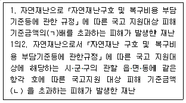
- ㄱ: 2.5, ㄴ: 4분의 1
- ㄱ: 2.5, ㄴ: 2분의 1
- ㄱ: 3, ㄴ: 4분의 1
- ㄱ: 3, ㄴ: 2분의 1
(정답률: 알수없음)
15. 재난 및 안전관리 기본법령상 재난관리의 정의로 옳은 것은?
- 재난이나 그밖의 각종사고로부터 사람의 생명·신체 및 재산의 안전을 확보하기 위하여 하는 모든 활동을 말한다.
- 대한민국의 영역 밖에서 대한민국 국민의 생명·신체 및 재산에 피해를 주거나줄수있는 재난으로서 정부차원에서 대처할 필요가있는 재난을말한다.
- 재난의 예방·대비·대응 및 복구를 위하여 하는 모든 활동을 말한다.
- 재난이 발생할 우려가 있거나 재난이 발생하였을 때 국민의 생명과 신체의 피해를 줄이기 위해 하는 모든 활동을 말한다.
(정답률: 알수없음)
16. 다음에서 설명하는 위험분석기법은?
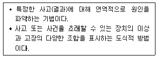
- 결함수분석기법(FTA)
- 예비위험분석기법(PHA)
- 사건수분석기법(ETA)
- 결함사고(위험)분석기법(FHA)
(정답률: 알수없음)
17. 자연재난 구호 및 복구비용 부담기준 등에 관한 규정상 재난복구사업을 위함 지원항목에 해당하지 않는 것은?
- 주택복구
- 공공시설의 복구
- 농경지 및 염전 복구
- 토지매입 비용
(정답률: 알수없음)
18. 자연재해대책법령상 재해정보 및 비상지원등에 관한 설명으로 틀린것은?
- 재난관리책임기관의 장은 자연재해가 발생하면 그 현황을 실시간으로 종합적인 재해정보체계에 입력하여야 한다.
- 지방자치단체의장은 필요하면 비상대처계획의 수립 실태를 점검할수있다.
- 해양경찰청은 해상에서의 각종지원 및 수난 구호등에 관한 사항에 대하여 긴급지원계획을 수립하여야 한다.
- 산업통상자원부장관은 종합 재해정보체계의 효율적인 활용을 위하여 재해정보체계 표준을 개발하여 보급하여야 한다.
(정답률: 알수없음)
19. 자연재해대책법령상 재해정보지도에 해당하지 않는 것은?
- 방재교육형 재해정보지도
- 보험산정형 재해정보지도
- 방재정보형 재해정보지도
- 피난활용형 재해정보지도
(정답률: 알수없음)
20. 일반자산의 총 직접피해액 산출 시 고려되지 않는 것은?
- 연평균피해액
- 일반자산피해액
- 인명피해액
- 일반자산 피해액에 대한 공공시설물의 비율
(정답률: 알수없음)
2과목: 방재시설
21. 유역의 시점부 표고가 170m이고 종점부 표고가 110m이며 시점부에서 종점부까지의 거리가 1200m일 때 유역의 경사는 얼마인가?
- 3%
- 5%
- 7%
- 9%
(정답률: 알수없음)
22. 자연재해대책법령상 우수유출저감시설중 침투시설에 해당하지않는것은 ?
- 침투통
- 빗물받이
- 침투트렌치
- 투수성포장
(정답률: 알수없음)
23. 내수재해의 원인이 아닌 것은?
- 외수 증가에 따른 우수 및 하수의 역류
- 도시개발에 따른 유출량 증가
- 인공사면의 시공불량
- 배수로 및 하수로의 배수능력 부족
(정답률: 알수없음)
24. 다음은 내수시설물 중 어떤 설계기준에 관한 설명인가?
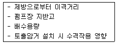
- 유수지
- 수문
- 배수펌프장
- 침전지
(정답률: 알수없음)
25. 그림과 같은 혼성방파제의 직립부에 파고 5m주기 10sec의 파랑이 작용이 작용 할 때 최대충격압을 Minikin공식(pm=102.4pgd(1+d/h)H/L)으로 구하면 약 얼마인가? (단, 파장은 103m, 해수의 단위중량은 1.025kN/3이다.)
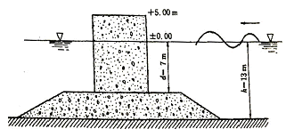
- 40kN/m2
- 45kN/m2
- 50kN/m2
- 55kN/m2
(정답률: 알수없음)
26. 자연재해위험개선지구 관리지침상 배수문, 유수지, 저류지 등 방재시설물 이 노후화하여 재해발생이 우려되는 시설물에 대해 지정하는 자연재해위 험지구는?
- 취약방재시설지구
- 붕괴위험지구
- 고립위험지구
- 유실위험지구
(정답률: 알수없음)
27. 자연재해대책법령상 수방기준을 제정하는 대상시설물에 해당하지않는것?
- 소하천정비법에 따른 소하천 부속물 중 제방
- 하천법에 따른 하천시설 중 제방
- 농어촌정비법에 따른 농업생산기반시설 중 농수산물 유통시설
- 하수도법에 따른 하수도중 하수관로 및 공공하수처리시설
(정답률: 알수없음)
28. 과거 발생한 풍수해 발생현황 조사대상에 해당하지 않는 것?
- 연도별·시설물별 피해액 현황
- 연도별·시설물별 복구비 현황
- 연도별·시설물별 손상률 현황
- 연도별 피해시설 분석을 통한 지방자치단체 재해 특성
(정답률: 알수없음)
29. 하천설계 시 하천제방에 대한 설계기준의 설명으로 틀린것은?
- 제방고는 계획홍수위에 여유고를 더한 높이 이상으로 한다
- 파랑고가 여유고보다 높은 경우는 파랑고를 여유고로 한다
- 계획홍수량이 200 m3/sec 미만인경우 여유고는 0.6m이상으로 한다
- 계획홍수량이 200 m3/sec 미만인경우 둑마루폭은 3.0m이상으로 한다
(정답률: 알수없음)
30. 사면재해 방지시설에 대한 취약요인 검토사항이 옳게 연결되지 않은것?
- 옹벽 - 배수공, 균열, 기울기
- 석축 - 석축 간의 결합 상태, 석축파손상태, 기울기
- 낙석방지 울타리 - 울타리 파손여부, 인접시설물과의 이격거리
- 법면 보호 울타리 - 법면 보호면의 인장력
(정답률: 알수없음)
31. 해안재해중 해안침식의 원인이 아닌것은?
- 높은파고에 의한 모래유실
- 해사채취에 의한 해안토사 평형상태 붕괴
- 해안구조물에 의한 연안표사 이동
- 해안 표류물의 퇴적
(정답률: 알수없음)
32. 하천의 하상경사가 급하고 저수지의 관리수위이하의 저수율을 보유하고 있는 하천 시점부의 농경지에서의 취약한 재해유형은?
- 하천재해
- 가뭄재해
- 내수재해
- 토사재해
(정답률: 알수없음)
33. 일반현황 조사 대상중 인문현황조사 항목이 아닌것은?
- 인구현황
- 산업현황
- 문화재현황
- 토지이용현황
(정답률: 알수없음)
34. 지형현황 조사를 위한 분석항목에 해당하지 않는 것은?
- 지질분석
- 표고분석
- 질·성토 사면분석
- 경사분석
(정답률: 알수없음)
35. 재난대응훈련 프로그램 영역에서 위기관리 매뉴얼상의 정부 부처의 조치 목록이 잘못 연결된 것은?
- 기상청:신속하고 정확한 호우특보 전파
- 교육부:긴급동원체계 및 인명구조 긴급지원태세 유지
- 산림청:산사태 취약지역 및 임도피해 우려지역 예찰강화
- 보건복지부:재해지역 식중독 예방대책 추진
(정답률: 알수없음)
36. 국가방재기본정책에 근거한 방재시설 중·장기 정책변화의 방향으로 옳은것은?
- 국토관리 계획분야는 과거 종합적, 과학적관리에 단편적, 경험적 관리로 변화 예상
- 방재 예산 분야는 복구 중심에서 예방중심으로 변화예상
- 취약지구 관리분야는 광역적으로 이루어지던부분이 국지적으로 변화예상
- 피해복구분야는 지속가능한 복구개념에서 원상복구의 개념으로 변화예상
(정답률: 알수없음)
37. 재해연보에의거한 과거에 발생한 재해이력 현황조사시 필요없는 항목은?
- 이재민
- 구호품
- 침수면적
- 농작물
(정답률: 알수없음)
38. 자연재해대책법령사 자연재해위험 개선지구 정비계획 수립주기는?
- 1년
- 3년
- 5년
- 7년
(정답률: 알수없음)
39. 하천의 물넘이 시설인 위어의 유량(Q)이 500m3/s 일 때, 사각위의 월류수심(H)이 2.9m 위어유량계수(C)가 2일 때, 위어 폭(L)은 약 몇 m인가?
- 26.24
- 50.62
- 60.62
- 101.24
(정답률: 알수없음)
40. 방재시설 피해 현장의 지반 조사 순서로 옳게 연결된 것은?
- 예비조사 → 보완조사 → 본조사
- 예비조사 → 본조사 → 보완조사
- 본조사 → 보완조사 → 예비조사
- 본조사 → 예비조사 → 보완조사
(정답률: 알수없음)
3과목: 재해분석
41. 지역별 방재성능목표 설정기준에 관한 설명으로 틀린 것은?
- 한국확률강우량도(국토부,2011)에서 제시한 69개 기상관측소를 기준으로 전국을 169개 티센망으로 구축한다.
- 8개 특별 및 광역시는 각각 하나의 티센망 으로 구성한다.
- 157개 시·군은 각각 하나의 티센망으로 구성한다.
- 제주도는 지역별 강우특성 등을 고려하여 남부·북부지역으로 구분하여 2개의 티센망으로 구성한다 .
(정답률: 알수없음)
42. 재해복구사업 분석 및 평가에서 재해저감성평가에 관한 설명으로 틀린것은?
- 평가대상 유역 또는 수계단위, 지구단위로 평가를 한다.
- 복구사업의 적절성 및 재해저감효과에 대해 평가한다.
- 복구사업으로 인한 단기효과와 중,장기 효과를 평가한다.
- 지구단위로 하천재해,토사재해, 사면재해,연안해재,바람재해 기타재해 등에 대해 평가한다.
(정답률: 알수없음)
43. 풍수해저감종합대책 시행계획의 광역차원 기본적 평가항목에 따른 우선순위 결정시 기본적 평가인자가 아닌 것은?
- 인명손실도
- 재해발생 위험도
- 피해액
- 풍수해저감 예산 집행 결과
(정답률: 알수없음)
44. 내수배제 시설물의 방재성능 분석모델 중 배수관로의 월류 및 기점홍수위에 의한 배수효과등의 수리현상을 모의할수 있는 것은?
- 합리식
- ILLUDAS
- XP-SWMM
- RRL
(정답률: 알수없음)
45. 다음 중 하천재해 유형에 해당하는것은?
- 우수유입시설 문제로 인한 피해
- 하상안정시설 유실
- 상류 유입토사로 인한 하천통수능 저하
- 하구폐쇄로 인한 홍수위 증가
(정답률: 알수없음)
46. 방재시설물의 경제성 평가시 투자우선순위결정을 위한 평가항목으로 틀린 것은?
- 효율성
- 합리성
- 긴급성
- 위험성
(정답률: 알수없음)
47. 내수재해 위험요인에 대한 설명으로 틀린것은?
- 우수관거 용량부족 및 관거 합류부 정체등 우수관거 관련 위험요인
- 지하수위 상승 및 하천 통수능 부족등의 내수위 영향으로 인한 위험요인
- 빗물받이 시설 부족 및 우수유입시설 관리미흡등의 우수유입시설로 인한 위험요인
- 빗물 펌프장 용량부족 및 배수로 정비불량등의 빗물 펌프장시설 문제로 인한 위험요인
(정답률: 알수없음)
48. 계곡부 산지하천 주변 토석류 유출로 인한 퇴적으로 하천이 범람하였다면 어떤유형의 복합재해가 발생하였는가?
- 하천재해 - 내수재해
- 토사재해 - 하천재해
- 사면재해 - 토사재해
- 내수재해 - 토사재해
(정답률: 알수없음)
49. 방재성능 개선대책중 소하천 정비 시행계획 수립시 고려해야할 항목이 아닌것은?
- 재해예방에 대한 기여도
- 주민의 생활환경 개선에 대한 기여도
- 주민의 소득 증대에 대한 기여도
- 지역별 방재성능목표 설정 및 운용에 대한 기여도
(정답률: 알수없음)
50. 방재성능 향상 대책중 유하시설 개선대책에 해당하지 않는것?
- 하수도 개선
- 빗물 펌프장 개선
- 고지배수로 개선
- 유수지 개선
(정답률: 알수없음)
51. 합리식에 의한 첨두홍수량의 산정방법으로 옳은 것은? (단, Qp:첨두홍수량, C:유출계수, I:강우강도, A:유역면적이다.)
- Qp = 0.2778CLA
- Qp = 0.2778 1/C IA
- Qp = 2.778CIA
- Qp = 2.778 1/C IA
(정답률: 알수없음)
52. 재해복구사업 분석·평가의 지역성장률 평가항목에 해당하지 않는 것은?
- 하천개수율
- 인구변화율
- 지역사회 성장률
- 지역낙후도
(정답률: 알수없음)
53. 다음의 표를 이용하여 전체면적 5.0km2인 지역의 내수재해 취약요인 분 석시 NRCS방법에 의한 유효우량 산정을 위한 유출 곡선지수(CN)를 옳게 산정한 것은? (단, 유역의 선행토양함수조건은 AMC-Ⅱ이다.)
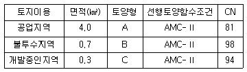
- 54.6
- 81.0
- 84.2
- 91.0
(정답률: 알수없음)
54. 다음표를 참조하여 방재분야 표준품셈에 따른 자연재해저감 종합계획 단계에서 해안재해위험지구를 기준으로 하는 단위 업무의 기술사 소요인력은? (단, 해안재해 위험지구는 18개소이다.)
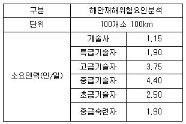
- 0.21인/일
- 0.45인/일
- 0.66인/일
- 1.21인/일
(정답률: 알수없음)
55. 재해발생원인 분석중 수문·수리학적 원인분석 절차를 순서대로나열한것?
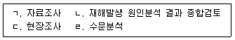
- ㄷ → ㄱ → ㄹ → ㄴ
- ㄱ → ㄷ → ㄹ → ㄴ
- ㄷ → ㄹ → ㄱ → ㄴ
- ㄹ → ㄱ → ㄷ → ㄴ
(정답률: 알수없음)
56. 빗물 배수펌프장의 용량부족에 의해 발생하는 내수침수의 해소대책이 아닌 것은?
- 빗물 배수펌프 증대
- 유수지 증대
- 고지배수로 설치
- 빗물 배수펌프장 유입관로 증대
(정답률: 알수없음)
57. 유지관리 평가대상 방재시설 중 공공하수도시설의 시설물에 해당하지 않는것은?
- 빗물 펌프장
- 공공하수처리시설
- 하수저류시설
- 양수장
(정답률: 알수없음)
58. 재해복구사업의 분석·평가대상 시설에 해당하지 않는 것은?
- 문화재 시설
- 배수시설
- 해안시설
- 사면
(정답률: 알수없음)
59. 지역별 방재성능목표 설정시 기후변화시나리오 분석 결과 미래 강우 증가율이 5%를 초과하는 것으로 예측되는 지방자치단체에서 할증률 상향 적용 여부를 검토후 결정할수 있도록 권고한 할증률이 아닌것은?
- 기본 할증률 5% 적용
- 관심지역 할증률 8% 적용
- 주의지역 할증률 10% 적용
- 심각지역 할증률 15% 적용
(정답률: 알수없음)
60. 행정안전부 주요 재난관리 평가제도의 지역안전도 진단4요소가 아닌 것은?
- 위험환경
- 위험관리능력
- 방재성능
- 위험저감능력
(정답률: 알수없음)
4과목: 재해대책
61. 다음중 토사유출량 분석 모형이 아닌것은?
- RUSLE
- MUSLE
- ADCIRC
- WEPP
(정답률: 알수없음)
62. 자연재해대책법령상 우수유출저감대책을 수립해야하는 사업에 해당하는지 않는것은? (단, 기타 사항은 고려하지 않음)
- 「고등교육법」에 따른 학교를 설립하는 경우의 건축공사
- 「도시개발법」에 따른 도시개발사업
- 「물환경보전법」에 따른 비점오염저감시설을 설치하는 대상사업
- 「중소기업진흥에 관한 법률」에 따른 단지조성사업
(정답률: 알수없음)
63. 파랑분석을 위한 전산프로그램의 매개변수에 해당하지 않는것은?
- 수평확산계수
- 해저마찰계수
- 조석 파랑장
- 파향
(정답률: 알수없음)
64. 전 지역단위 저감대책 수립시 비구조적 저감대책이 아닌 것은?
- 풍수해보험 활성화
- 재해지도 작성
- 토지이용계획과 연계방안
- 우수유출저감시설 설치
(정답률: 알수없음)
65. 굳은 점토층을 깊이5m까지 연직절토하였다 이 점토층의 일축압축강도가 1.4kg/cm2,흙의 단위중량 Γ(감마)=2 t/m3일때 파괴에 대한 안전율은 얼마인가?
- 2.3
- 2.5
- 2.8
- 3.0
(정답률: 알수없음)
66. 재해영향평가실무지침상 경제성 및 작업성을 고려한 바람직한 지하공간 저류한계 수심은?
- 2m 미만
- 3m 미만
- 4m 미만
- 5m 미만
(정답률: 알수없음)
67. 자연재해대책법령상 재해영향평가등의 협의대상 분야에 해당하지 않는것은?
- 국토·지역 계획 및 도시의 개발
- 지질 및 생태 개발
- 에너지 개발
- 관광단지 개발 및 체육시설 조성
(정답률: 알수없음)
68. 자연재해위험개선지구 등급별 지정기준 중 ′재해발생시 인명피해 발생우려가 매우높은 지역′의 등급은?
- 가 등급
- 나 등급
- 다 등급
- 라 등급
(정답률: 알수없음)
69. 강우관측소 선정시 고려해야할 사항이 아닌것은?
- 관측소의 위치
- 관측소의 관측자
- 관측연수 및 자료연수(30년 이상 보유)
- 관측자의 표고
(정답률: 알수없음)
70. 저류형 우수유출 저감시설의 방식 중, 하천이나 우수관 횡월류부를 통하여 첨두 또는 일부만을 유입시키는 방식은?
- On-line
- Off-line
- On-site
- Off-site
(정답률: 알수없음)
71. 방재교육형 재해정보지도의 표준 기재항목에 해당하지 않는 것은?
- 방재대책현황
- 과거 피해상황
- 침수예상구역 및 침수흔적
- 홍수발생 특성
(정답률: 알수없음)
72. 유출계수 0.7이고 유역에서 첨두홍수량이 도달할때까지의 시간은 20분이다. 합리식으로 첨두홍수량(m3/s)을 계산한 값은 얼마인가? (단, 강우강도식: I(mm/hr)= 2000/t, t[분])
- 9.72
- 19.84
- 40.42
- 97.23
(정답률: 알수없음)
73. 침수흔적도 작성의 침수흔적 조사에서 침수흔적 표시·관리, 침수흔적도 작성을 위하여 수행하는 조사인 정밀조사의 종류가 아닌 것은?
- 초동조사
- 기초조사
- 현지조사
- 간접조사
(정답률: 알수없음)
74. 재해정보지도 중 무엇에 관한 설명인가?
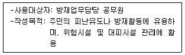
- 방재정보형
- 피난활용형
- 방재교육형
- 재해저감형
(정답률: 알수없음)
75. 호안을 설치해야 하는 경우,소류력 또는 유속이외에 종합적으로 고려하여야할 사항이 아닌것은?
- 경제성
- 시공성
- 환경성
- 신기술 적용성
(정답률: 알수없음)
76. 자연재해대책법령상 행정안전부장관은 재해영향성검토 협의를 요청받은 날부터 몇 일 이내에 통보하여야 하는가? (단, 기타사항은 고려하지 않음)
- 10
- 20
- 30
- 45
(정답률: 알수없음)
77. 자연재해위험개선지구 관리지침상 침수위험 지구의 정비대상 시설물이 아닌 것은 ?
- 옹벽
- 저류지
- 배수펌프장
- 방조제
(정답률: 알수없음)
78. 재해지도의 종류중 침수예상도에 해당되는것은?
- 침수흔적도
- 홍수범람위험도
- 재해정보지도
- 비상대처계획도
(정답률: 알수없음)
79. 침수흔적도 작성절차의 순서가 옳게 나열된 것은?
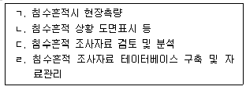
- ㄱ → ㄴ → ㄷ → ㄹ
- ㄴ → ㄹ → ㄱ → ㄷ
- ㄷ → ㄱ → ㄴ → ㄹ
- ㄹ → ㄴ → ㄷ → ㄱ
(정답률: 알수없음)
80. 재해지도 작성기준등에 관한 지침상 대피 장소 지정의 일반적요건에 관한 설명으로 틀린 것은?
- 주 대피경로로부터 접근이 용이한 시설
- 원칙적으로 내진·내화의 공공건축물 이용
- 지역안전관리상 대피장소로 지정된 대상시설이 부족한 경우에는 사유시설인 민간 집합시설, 호텔, 여관, 연수시설, 체육관, 사원 기숙시설 등을 대피장소로 지정
- 수용가능 인원은 원칙적으로 실외대피장소인 경우는 1인당1m2확보토록 하는 것이 바람직
(정답률: 알수없음)
5과목: 방재사업
81. 태풍피해가 많은 지역이나 광활한 모래지대에 공해방지와 쾌적한 환경조성을 위해 설치하는 방재시설물은?
- 방파제
- 방조제
- 방풍설비
- 방지망
(정답률: 알수없음)
82. 농경지 피해액 산정시 논과 밭의 침수심 경계선 높이는 몇m인가?
- 0.5m
- 1.0m
- 1.5m
- 2.0m
(정답률: 알수없음)
83. 자연재해위험개선지구 사업계획 수립에 관한 설명으로 틀린것은?
- 사업계획은 자연재해대책법에 따라 수립된 정비계획을 검토·반영 하여 다음연도 정비사업 시행을 위한 집행계획 수립을 의미한다
- 시장·군수·구청장은 다음연도에 추진할 사업계획을 수립하여 행정안전 부장관에게 제출한다
- 자연재해대책법에 따라 수립된 정비계획의 투자우선순위를 반영하여 사업계획을 수립하여야 한다
- 행정안전부장관은 4월30일까지 전국단위의 사업계획을 수립하여 기획재정부 등과 협의한다
(정답률: 알수없음)
84. 자연재해대책법령상 방재시설의 정기적인 유지·관리 평가는 연 몇회 실시하는가?
- 1회
- 2회
- 3회
- 4회
(정답률: 알수없음)
85. 자연재해대책법령상 유지·관리해야하는 방재시설중 하천시설에 해당되지 않는것은?
- 제방
- 호안
- 양수장
- 수로터널
(정답률: 알수없음)
86. 본 바닥 흙을 굴착하여 8800m3를 긴급으로 성토할 계획으로 5m3를 적재할 수 있는 덤프트럭을 사용하면 운반소요 대수는 얼마인가? (단, 토량변화율 L=1.25, C=0.8이다.)
- 1100대
- 2200대
- 3300대
- 4400대
(정답률: 알수없음)
87. 연안침식방지공법 중 사빈안정화공법에 포함되지 않는 것은?
- 직립호안
- 이안제(내습파랑저감)
- 돌제(연안표사제어)
- 지하수위저감
(정답률: 알수없음)
88. 시설물의 안전 및 유지관리 실시등에 관한 지침상 안전성평가를 위해 필요한 계측, 측정, 조사 및 시험 항목으로 명시되지 않는 것은?
- 누수탐사
- 수리·수충격·수문조사
- 지형,지질조사 및 토질시험
- 재해이력조사 및 수리모형실험
(정답률: 알수없음)
89. 하천제방의 유하 능력에 여유를 확보하기 위하여 여유고를 더 높게 하는경우에 해당하지 않는 것은?
- 상류부가 황폐되어 있는 경우
- 유출 토사가 다량으로 퇴적할 염려가 있는 하천
- 제외지에 중요한 시설이 있을경우
- 만곡 하천의 요안(凹岸)부
(정답률: 알수없음)
90. 어느 하천에서 재현기간 5년 홍수가 다음해에 발생할 확률(%) ′A′ 재현기간 5년 홍수가 다음 5년 동안 적어도 한 번 발생할 확률(%) ′B′는 각각얼마인가?
- A: 20%, B: 50%
- A: 25%, B: 67%
- A: 20%, B: 67%
- A: 25%, B: 50%
(정답률: 알수없음)
91. 우수유출저감시설의 종류·구조·설치 및 유지관리 기준상 지역외 우수유출저감시설의 설치위치로 피해야 할곳은?
- 설치지점의 부지면적을 고려한 충분한 저류용량확보가 가능한 지역
- 지대가 주변보다 높은 지역
- 설치시 저감효과가 우수하며, 침수피해 저감효과가 있는 지점
- 현지여건상 시공 및 교통처리에 큰 문제가 없는 지점
(정답률: 알수없음)
92. 다음 방재시설의 대응체제는 어떤 계측관리 수준에 관한 설명인가?
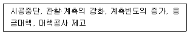
- 통상수준
- 주의수준
- 경계수준
- 대피수준
(정답률: 알수없음)
93. 침수위험지구 등의 피해액 산정 시 가장 유효한 변수?
- 강우량
- 인구밀도
- 침수면적
- 하천 개수율
(정답률: 알수없음)
94. 관로검사에 관한 설명으로 틀린것은?
- 관로검사는 종·횡방향 시공의 적정성을 판단하기 위하여 경사검사를 수 행한다.
- 경사검사는 경사 및 측선변동을 조사한다.
- 수밀검사는 침입시험과 침출시험으로 구분한다.
- 침압시험에는 누수시험, 공기압시험, 부분수밀시험 있다.
(정답률: 알수없음)
95. 중력식 사방댐이 안정되기 위한 조건이 아닌 것은?
- 전도에 대한 안정
- 제체의 파괴에 대한 안정
- 기초지반의 지지력에 대한 안정
- 양압력에 대한 안정
(정답률: 알수없음)
96. 사면보호시설 중 다음은 어떤옹벽에 관한 설명인가?
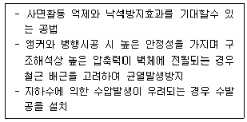
- 의지식 옹벽
- 중력식 옹벽
- 낙석방지용 옹벽
- 계단식 옹벽
(정답률: 알수없음)
97. 사방댐 중 유목차단을 주목적으로 하는 경우에 설치하는 것은?
- 의지식 옹벽
- 중력식 사방댐
- 복합식 사방댐
- 불투과성 사방댐
(정답률: 알수없음)
98. 침수면적 피해액 관계식에서 도시의 유형별 구분으로 틀린것은?
- 대도시
- 농촌지역
- 산간지역
- 어촌지역
(정답률: 알수없음)
99. 교량의 내진 성능 보간을 위한 적용 장치에 포함되지 않는 것은?
- 지진격리장치
- 감쇠장치
- 가속도측정장치
- 능동제어장치
(정답률: 알수없음)
100. 자연재해대책법령상 방재시설의 유지·관리 평가대상에 해당하지 않는것은?
- 방재시설의 유지·관리에 필요한 설계 및 계획에 대한 평가
- 방재시설에 대한 정기 및 수시 점검사항의 평가
- 방재시설의 보수·보강계획 수립·시행 사항의 평가
- 재해발생 대비 비상대처계획의 수립사항 평가
(정답률: 알수없음)